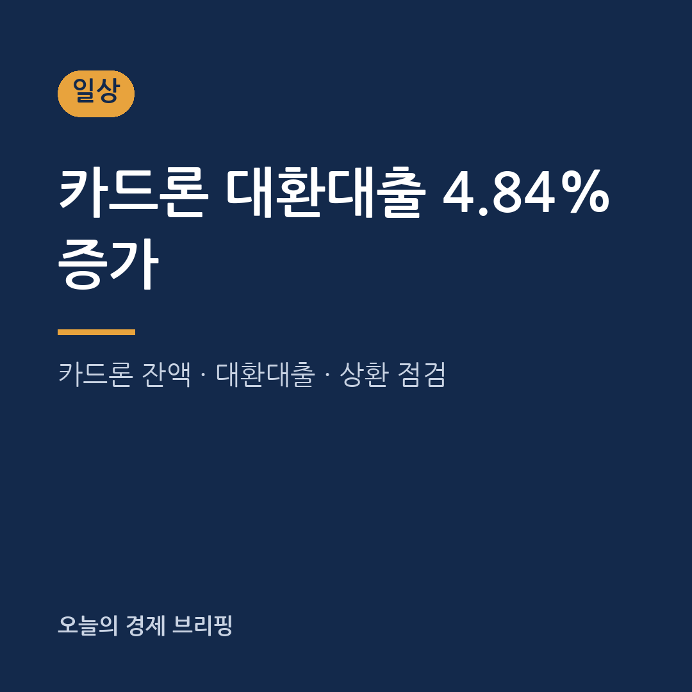
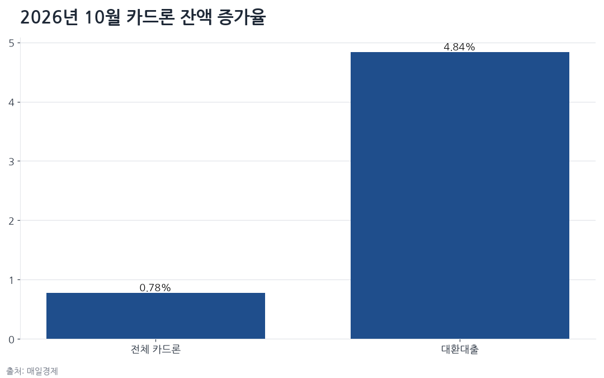

2026-11-20-1834-tistory 발행 키트 · 이 페이지는 검색에 노출되지 않습니다.
제목
카테고리
일상태그
본문 (그림·표 포함)
휴대폰 블로그 앱에서는 그림이 같이 붙지 않을 수 있어요. 그때는 [글자만 복사] 후 아래 이미지를 저장해 [그래프1]·[표1] 자리에 첨부하세요.

2026년 10월 말 국내 카드사 카드론 잔액은 42조6701억원으로, 한동안 이어지던 감소 흐름이 끊기고 증가로 전환했습니다. 이 가운데 기존 카드론 상환을 위해 같은 카드사에서 새로 받은 대출의 잔액은 전체보다 훨씬 빠르게 늘었습니다. 카드론 이용자라면 연말 전에 상환 계획을 확인할 필요가 있는 시점입니다.
▶ 배경: 카드론과 대환대출의 개념
카드론은 신용카드사가 카드 회원에게 내주는 대출입니다. 은행 대출 심사를 거치기 어렵거나 급하게 자금이 필요할 때 이용하는 경우가 많습니다.
카드론 대환대출은 이미 받은 카드론의 상환 시점이 왔을 때, 그 돈을 갚기 위해 같은 카드사에서 다시 받는 대출을 뜻합니다. 만기를 미루는 효과가 있지만 채무 자체가 줄어드는 것은 아닙니다.
▶ 핵심 내용: 확인된 수치
보도된 10월 수치는 세 가지입니다. 카드론 전체 잔액은 42조6701억원이며, 전체 잔액 증가율은 0.78%입니다. 대환대출 잔액 증가율은 4.84%였고, 금액으로는 한 달 사이 791억원 늘었습니다.
대환대출 증가율이 전체 증가율의 6배를 웃돕니다. 새로 자금을 빌리는 수요보다 기존 대출을 갚지 못해 다시 빌리는 수요가 더 빠르게 늘었다는 해석이 가능합니다.

▶ 영향: 이용자가 체감할 수 있는 부분
대환을 거듭하면 상환 시점이 뒤로 밀리는 동안 이자가 계속 발생합니다. 월 상환 부담이 가계 지출에서 차지하는 비중이 커질 수 있다는 의미입니다.
연말에는 모임·선물·난방비 등 지출이 집중되는 시기여서, 이미 대출을 쓰고 있는 가구는 현금 흐름이 더 빠듯해질 수 있습니다. 다만 이번 수치는 업권 전체의 통계이므로, 개인의 상황은 각자 따로 확인해야 합니다.
▶ 확인할 점: 대상별 점검 항목
카드론을 이용 중인 경우 카드사 앱 또는 고객센터에서 남은 원금, 적용 금리, 만기일, 중도상환 수수료 여부를 확인하시기 바랍니다. 대환을 반복 중이라면 총 이자 규모를 계산해 볼 필요가 있습니다.
상환이 부담스럽다면 다른 금융기관 상품과 조건을 비교해 보는 방법이 있습니다. 상품별 금리·한도·수수료는 달라 일률적으로 권하기 어렵습니다.
10월 카드론 주요 수치와 점검 항목
| 구분 | 내용 |
|---|---|
| 카드론 잔액 | 42조6701억원 |
| 전체 잔액 증가율 | 0.78% |
| 대환대출 잔액 증가율 | 4.84% |
| 대환대출 한 달 증가액 | 791억원 |
| 이용자 점검 항목 | 남은 원금·금리·만기일·중도상환 수수료 |
출처: 연합뉴스, 매일경제
▶ 정리
첫째, 10월 카드론 잔액은 42조6701억원으로 감소 흐름이 증가로 바뀌었습니다.
둘째, 같은 카드사 대환대출 잔액은 4.84% 늘어 전체 증가율 0.78%를 크게 웃돌았습니다.
셋째, 이용 중이라면 연말 전에 만기·금리·상환 계획을 먼저 점검하시기 바랍니다.
이 글은 공개된 뉴스와 공공자료를 바탕으로 정리한 정보 제공용 글이며, 투자 권유가 아닙니다.
출처 (본문 맨 아래에 붙여넣기 권장)
- 연합뉴스, 지난달 카드론 잔액 42조6천701억원…4개월 만에 증가, https://www.yna.co.kr/view/AKR20261120158200002 - 매일경제, 카드론 갚으려 같은 카드사서 다시 빌린 돈, 한 달 새 4.84% 늘었다, https://www.mk.co.kr/news/economy/12214900